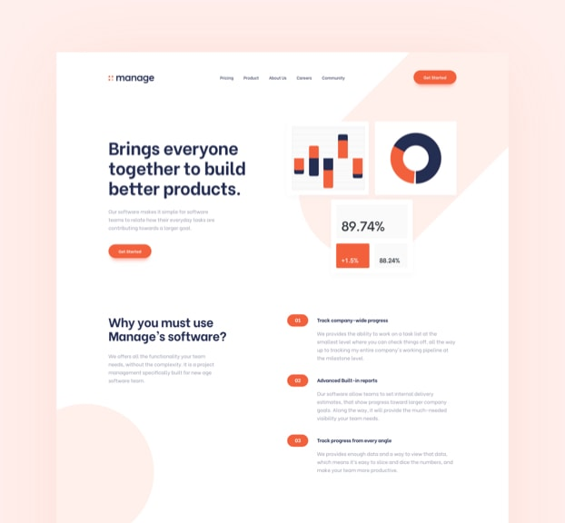
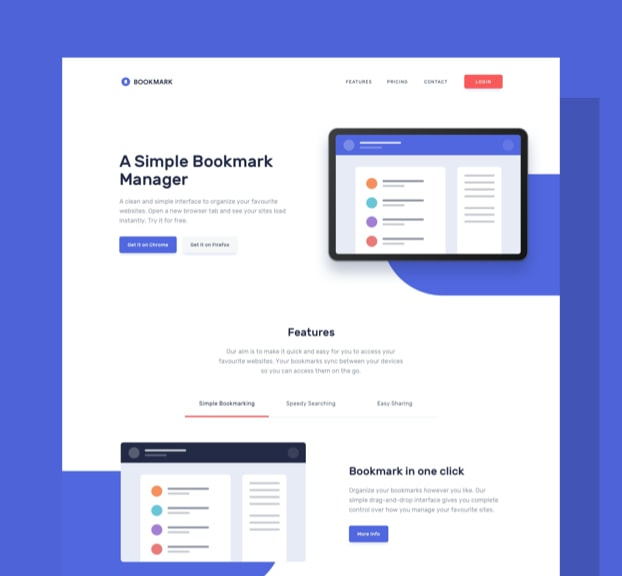
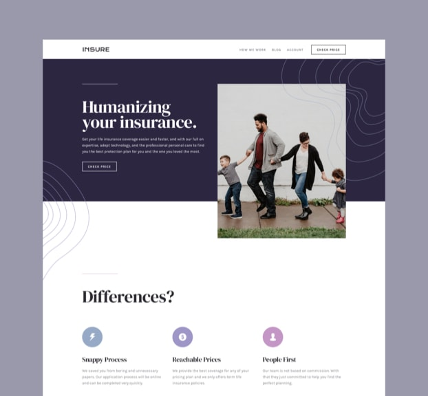
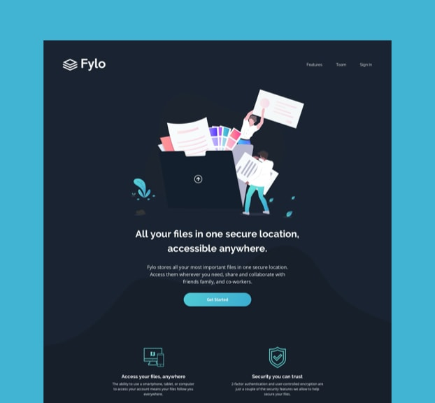

Manage
This project required me to build a fully responsive landing page to the designs provided. I used HTML5, along with CSS Grid and JavaScript for the areas that required interactivity, such as the testimonial slider.
VIEW PROJECT
Bookmark
This project required me to build a fully responsive landing page to the designs provided. I used HTML5, along with CSS Grid and JavaScript for the areas that required interactivity, such as the features section.
VIEW PROJECT
Insure
This was a small project which mostly consisted of HTML and CSS. I built a fully-responsive landing page. The only JavaScript this project required was to enable the toggling of the mobile navigation.
VIEW PROJECT
Fylo
This project was built in pure HTML and CSS. I had mobile and desktop designs to work to and built it so that it was fully-responsive. I took a mobile-first approach and used modern CSS like Flexbox and Grid for layout purposes.
VIEW PROJECT